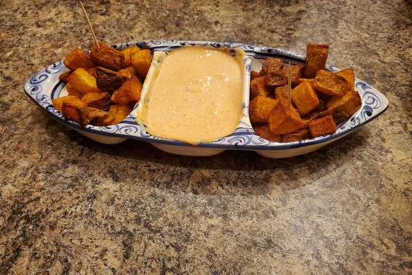

Patatas Bravas

Description:
Patatas bravas, also called patatas a la brava or papas bravas, all meaning "spicy potatoes", is a dish native to Spain. It typically consists of white potatoes that have been cut into 2-centimeter-wide cubes, then fried in oil and served warm with a spicy sauce.
Ingredients:
Dipping sauce:
- 1 clove garlic, minced
- 1/2 teaspoon smoked paprika
- 1 pinch salt
- 1 cup mayonnaise
- 1 tablespoon sherry vinegar
- 1 tablespoon tomato paste
- 1/4 teaspoon ground chipotle paste
- 1 pinch cayenne pepper
Spice blend:
- 1 tablespoon salt
- 1/2 teaspoon ground black pepper
- 1/2 teaspoon paprika
- 1/2 teaspoong round chipotle pepper
Potatoes:
- 2 quarts cold water
- 1 tablespoon salt
- 1 teaspoon smoked paprika
- 1 teaspoon ground cumin
- 2 bay leaves
- 2 pounds russet potatoes, peeled and cut into 1-inch cubes
- 2 cups vegetable oil for frying
Directions:
- Make dipping sauce: Combine garlic, smoked paprika, and salt in a mortar and pestle or food processor; process until smooth. Mix in mayonnaise, sherry vinegar, tomato paste, chipotle chile powder, and cayenne pepper until combined. Cover and refrigerate sauce.
- Make spice blend: Mix together salt, black pepper, paprika, and chipotle chile powder in a small bowl. Set aside.
- Make potatoes: Pour water into a large saucepan. Stir salt, smoked paprika, cumin, and bay leaves into water. Bring to a boil, reduce heat to low, and cover; simmer for 10 minutes.
- Stir potatoes into seasoned water, bring to a boil, and simmer until potatoes are tender but not fully cooked, 4 to 5 minutes. The tip of a paring knife should easily insert into the center of a potato cube. Drain potatoes and transfer to a wire rack to cool completely, about 45 minutes.
- Heat vegetable oil in a large cast iron skillet or Dutch oven to 350 degrees F (175 degrees C).
- Add cooled potato cubes and cook, stirring frequently, until golden brown, 5 to 6 minutes. Transfer potatoes to a baking sheet lined with paper towels to cool slightly. Toss in a bowl with spice blend and serve with dipping sauce.
Go back to the main page.